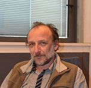

|

|
PHASE TRANSITIONS WITH QUENCHED DISORDER: UNIVERSALITY AND NON-SELFAVERAGING.Victor DotsenkoUniversité Pierre et Marie CurieLong standing problem of the nature of the phase transitions in weakly Disordered Ising-like statistical systems [1] is considered from the point of view of the recent developments in the replica method [2]. In particular, non-perturbative [3] and non-selfaveraging [4] phenomena in the critical point are considered,as well as the possibility of the universal probability distribution function for non-selfaveraging free energy critical fluctuations is discussed [5].[1] V.Dotsenko, "Critical phenomena and quenched disorder", Physics-Uspekhi, v.38(5), 457 (1995); V.Dotsenko "Introduction to the Replica Theory of Disordered Statistical Systems", Cambridge University Press, 2001 [2] V.Dotsenko, "One more discussion of the replica trick: the example of the exact solution", Philosophical Magazine, v.92, 16 (2012); V.Dotsenko, "Replica solution of the Random Energy Model" Europhysics Letters, v.95 50006 (2011); V.Dotsenko, "Universal Randomness", Physics-Uspekhi, v.54(3), 259 (2011) [3] V.Dotsenko, "Non-pertrurbative states in disordered systems", Physica A, v.361, 463 (2006) [4] S.Wiseman and E.Domany, Phys. Rev. E v.52, 3469 (1995); A.Aharony and B.Harris, Phys. Rev. Lett. v.77, 3700 (1996); S.Wiseman and E.Domany, Phys. Rev. Lett. v.81, 22 (1998). [5] V.Dotsenko and B.Klumov, "Free Energy Distribution Function of a Random Ising ferromagnet", J.Stat.Mech. P05027 (2012) Personal webpage |